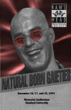

Music

sorry kids- until I can pull copies of the sound files
from the depths of the archives, there will be no sounds available from
Gaieties '94.
 "Safe Sex of the 90's" (11K AIFF, 3.2M)
"Safe Sex of the 90's" (11K AIFF, 3.2M)
This song was subtitled "Intercourse over the Internet". Need I say more?
Sean White '92, MS '93
reprises his role from Gaieties '89
(!!) as the not-so-nerdy computer consultant. (Back then it was
"Addicted to LOTS" sung to the tune of Robert Palmer's "Addicted to
Love".)
"Lordy Gordy" (11K AIFF, 2.2M)
In an alternate universe, Leland Stanford Junior is saved from Typhoid fever
in 1884 by a mysterious visitor. Back in 1994, Old Leland encounters the
time-traveller, one Gordy Schmegmeir from Cal, and sings this gospel number
celebrating his "Second Coming".
Soloists in order: Paul D'Albora '96 as Old Leland, Dave Barlin '95 as
Gordy, and Denise Shepherd '97, Liz Brimhall '95, and Salma Qarnain
'96 as the gospel singers.
music by Jeremy Desmon
lyrics by the writing staff
digitized by Jeff Meador
captions by Dan Goldman